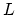
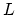
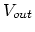
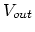
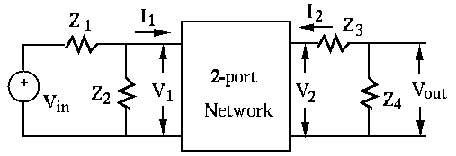

An AC voltage source of 60 Hz and 26V (rms) is connected to a coil
modeled by a resistor  in series with an inductor  as the load.
It is found through measurement that the current through the load is
2A (rms) and the real power consumed is 20 Watts. Find (a)
in series with an inductor  as the load.
It is found through measurement that the current through the load is
2A (rms) and the real power consumed is 20 Watts. Find (a)  , (b) ,
(c) the power factor of the load, (d) the reactive power, and (e) the
apparent power.
, (b) ,
(c) the power factor of the load, (d) the reactive power, and (e) the
apparent power.
The parameters of the Y-model of the two-port network are  ,
,
 , and
, and  (all in unit
(all in unit  ). The
voltage source is , and ,
). The
voltage source is , and ,  ,
,
,
,  . Find .
. Find .

A DC circuit containing a diode is shown below, where  ,
,
,
,
 ,
,
 , and the diode can be described by
, and the diode can be described by

Find the DC operating point  of the transistor circuit
given below, where
,
of the transistor circuit
given below, where
,
 ,
,
 ,
,
 , and
, and  . If you find the DC operating point is not
in the middle of the linear region of the output characteristic plot, try
to modify
. If you find the DC operating point is not
in the middle of the linear region of the output characteristic plot, try
to modify  so that it will be in the middle of the linear region (to
maximize the dynamic range of the AC output).
so that it will be in the middle of the linear region (to
maximize the dynamic range of the AC output).